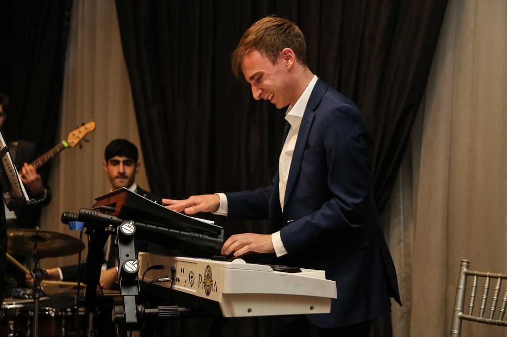

Gallery
1 / 8

Playing Piano & Synth with "Skule Combo" at UofT Engineering's "GradBall", 2024
2 / 8

Playing Piano & Synth with the "Covalent Quintet" at UofT Chemical Engineering's "Dinner Dance", 2023
3 / 8
Accompanying Prof. Michael Guerzhoy (not pictured) at UofT Engineering Science's "Nocturne", 2024
4 / 8
Playing piano with "Skule Combo" at UofT Engineering's "GradBall", 2024
4 / 8
Playing Keys 1 (Piano) with the Skule Nite Pit Orchestra, 2024
5 / 8
Playing piano with "Skule Combo" at UofT Engineering's "Godiva Wake", 2024
7 / 8
Playing piano with Joaquin Arcilla (T. Sax) & Liam Ernst-Selway (Bass) at Uoft Engineering Science's "Nocturne", 2023
8 / 8
Playing piano with Skule Stageband at Uoft Engineering's "Suds", 2023